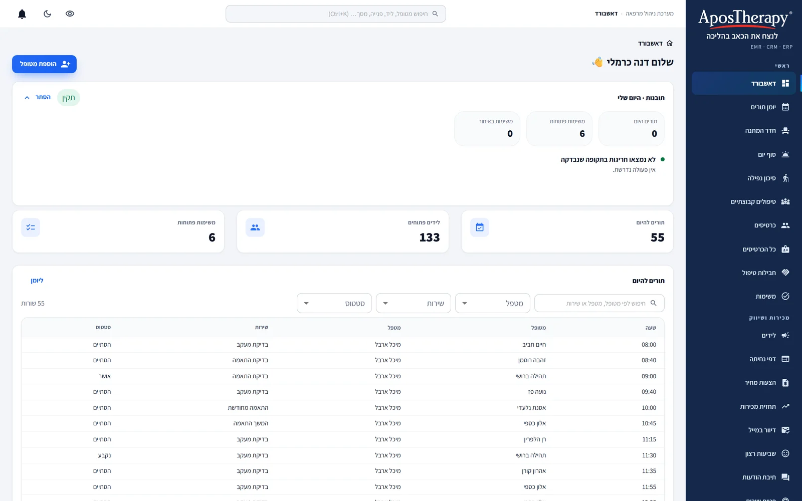
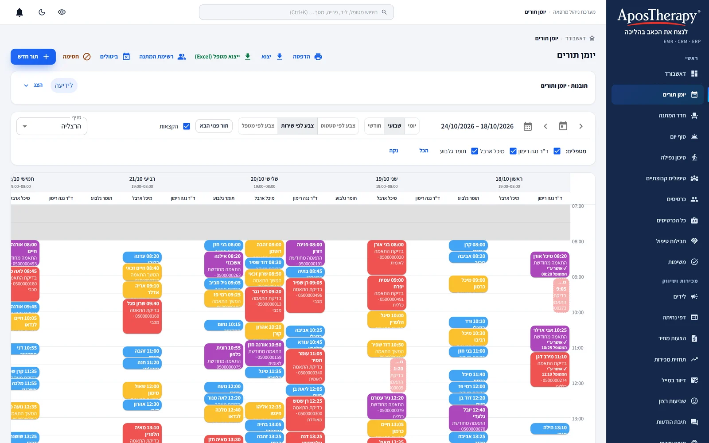
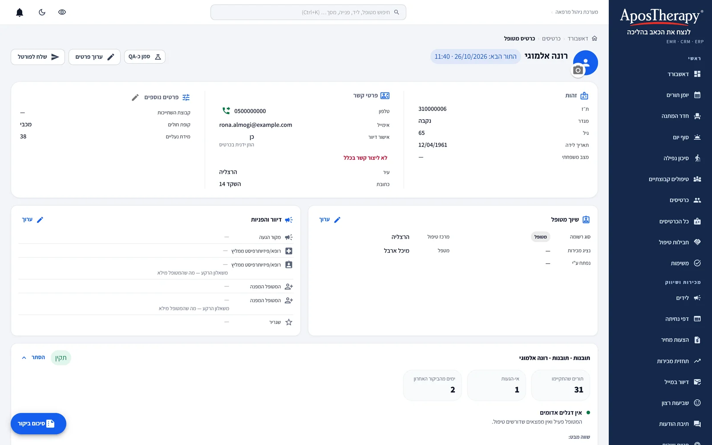
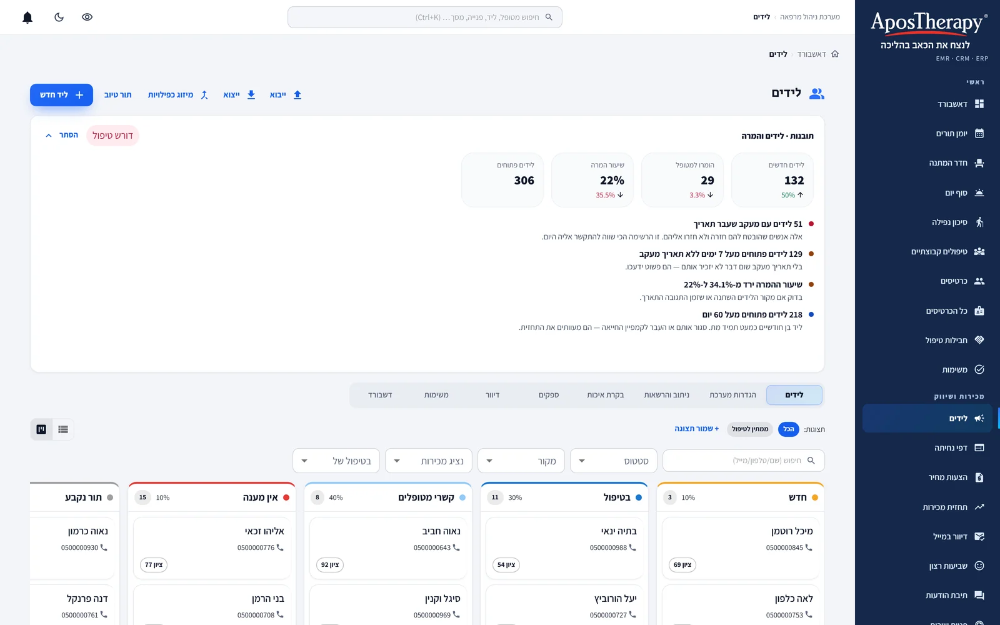
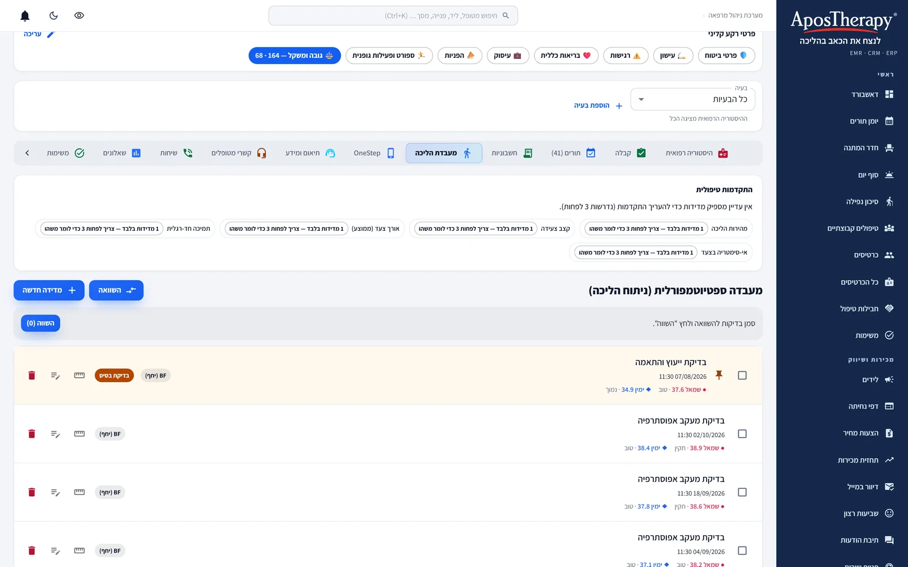
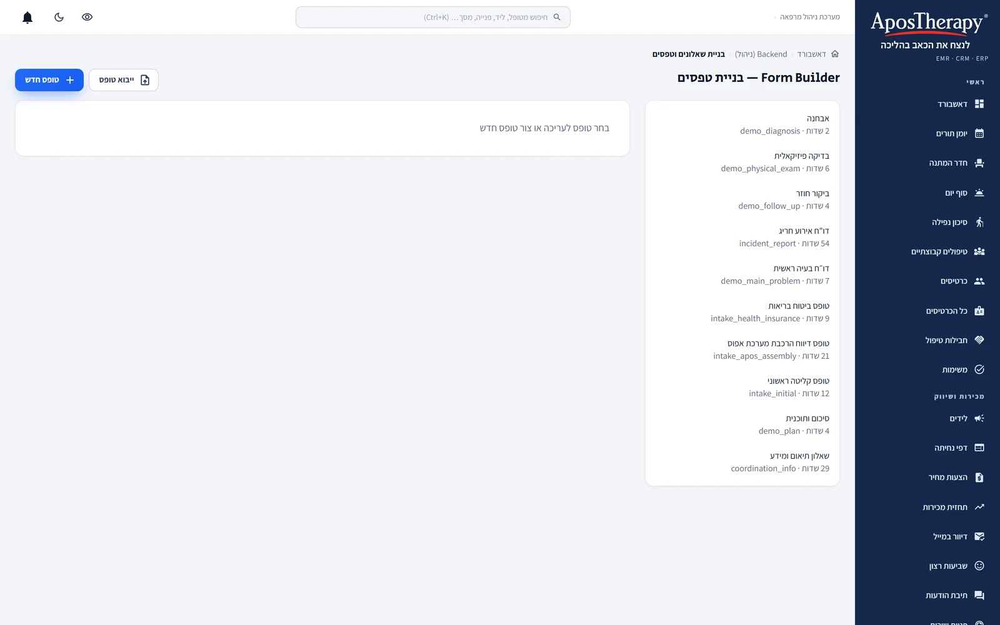
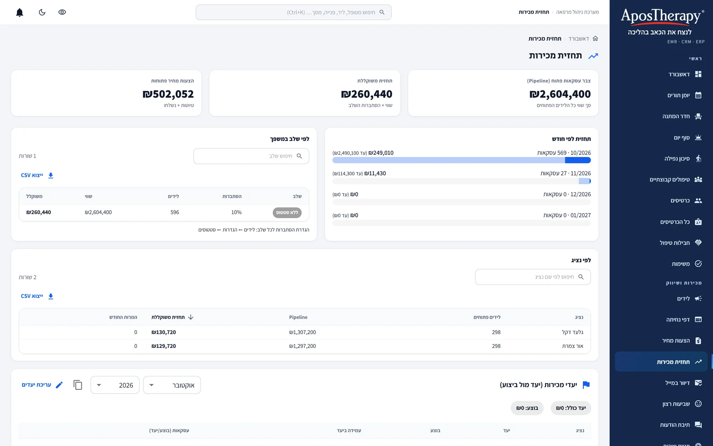
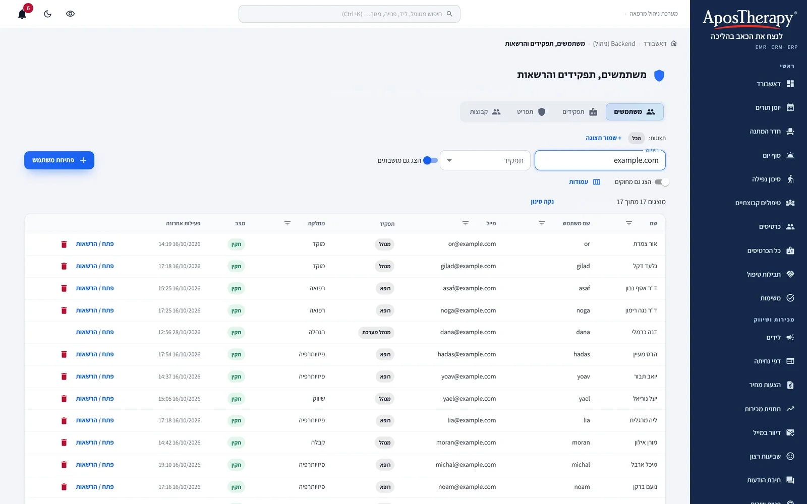
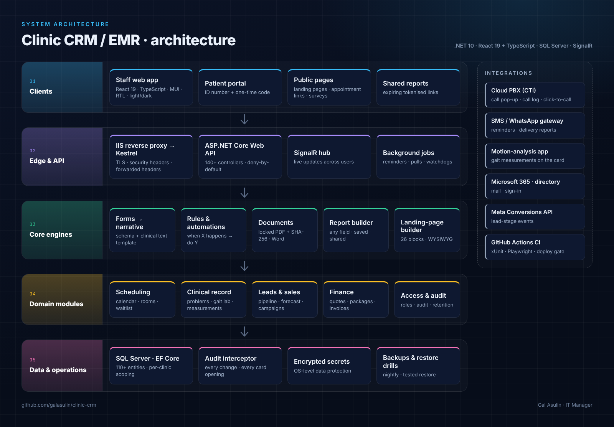

📊 At a glance
| What | CRM + EMR + front desk + patient portal for a multi-branch physiotherapy clinic network |
| Status | Operational: installed in production since July 2026, the teams work in it |
| Scale of the build | 140+ API controllers · 110+ domain entities · about 100 screens · 26 landing-page blocks · 47 in-app lessons |
| Stack | ASP.NET Core Web API on .NET 10 LTS · EF Core · SQL Server · SignalR · React 19 · TypeScript · Vite · MUI |
| Hosting | Self-hosted on the clinic's own Windows servers, IIS reverse proxy in front of Kestrel |
| Languages | Hebrew (RTL) first, light and dark themes from one design-token layer |
| My role | Everything: requirements, data model, backend, frontend, design system, integrations, deployment, backups |
| Delivery record | 1,305 tracked requirements · 876 closed with live evidence · 194 more proven in an isolated environment (November 2026) |
📸 Screens
 Dashboard Today's appointments, tasks and leads. |
 Calendar By therapist, room and branch. Drag to move. |
 Patient card One search opens the whole card. |
 Leads List or board, by sales stage. |
 Gait lab Every measure against the norm and the baseline. |
 Clinical forms Fields, required fields, signature. |
 Sales forecast Every deal weighted by probability. |
 Users and permissions By role, group and user. |


Click a screen for full size. The live page has the launch trailer (preview, work in progress).
🚀 What makes it different
Most clinics run a scheduling tool, a separate medical record, a separate lead tool, a spreadsheet for sales and a phone system that knows nothing about any of them. This system replaces all of them with one data model.
| What it means in practice | |
|---|---|
| Engines, not screens | Clinical forms, the narrative text they produce, automations, document templates, reports and landing pages are all data, edited in the settings screens. A new form or a new report needs no code and no release. |
| Clinical and commercial in one record | The same person moves from lead to prospective customer to patient without retyping. The call that created the lead, the campaign that paid for it, the visits, the gait measurements and the package they bought sit on one timeline. |
| Forms that write the clinical text | A clinician answers structured questions; the engine composes a flowing Hebrew clinical narrative from the answers (placeholders, conditional sentences, loops). The text stays editable, signable and exportable. |
| A gait lab inside the record | Gait measures are stored per exam and judged against clinical norms; follow-up exams are compared with the baseline, side by side. Measurements from the patient's motion-analysis phone app land on the same card. |
| Telephony that knows the patient | Every inbound and outbound call from the cloud PBX is linked to the patient or lead card, with click-to-call from the card. |
| Marketing closed-loop | A drag-and-drop landing-page builder publishes pages that post leads straight into the pipeline with their ad source; lead-stage events go back to the ad platform through its Conversions API. |
| Security decided per route | Every API route carries an explicit, tested authorization decision. Every change and every opening of a patient card is audited. Every delete is recoverable. |
| Evidence before "done" | Nothing is closed without a screenshot, a query result or a passing test. Each release passes CI, a run against a separate database and an automatic post-deploy check that rolls back on failure. |
✅ Capabilities
Front desk and call center
- A calendar by therapist, room and branch; a day view by room (including the gait lab); drag an appointment to a free slot; a small month calendar that jumps to a day; one button finds the next free slot.
- Five branches, each with its own opening hours and one-off exceptions.
- A waiting-room board: who has arrived, how long they have been waiting, and who is in treatment.
- An SMS the day before for appointments booked in the system, with a personal link to confirm, add to the phone calendar, open navigation, or cancel. A cancellation from the link opens a follow-up task, and every cancellation is listed with its reason and what was already handled.
- A slot that opens up is offered to a waiting patient through a personal link.
- Every call from the cloud PBX, inbound and outbound, linked to the patient or lead card.
- Team tasks and follow-ups, including what is overdue.
Clinicians
- One search box, and the patient card opens.
- The record is organised by problem (for example, right knee), and filling a clinical form writes the narrative summary.
- Clinical forms with fields, required fields and a signature field.
- Gait measurements against the norm (normal / good / low), and comparison of follow-up exams against the baseline exam.
- Measurements from the patient's motion-analysis phone app on the card, and a list of patients who stopped measuring.
- Visit documents exported as a locked PDF with a SHA-256 fingerprint, plus an editable Word file.
- End of day: what still waits for documentation.
Sales and marketing
- Every lead with its source, down to the referring doctor; leads from landing pages arrive directly with their source.
- A pipeline as a list or a board by sales stage; from lead to customer and patient without retyping.
- A drag-and-drop landing-page editor with 26 blocks; the published page is identical to the editor on desktop and mobile; registrants with their ad source, exportable to Excel.
- Campaign budget, cost per lead and conversion rate.
- Quotes and orders (what was sent, what was approved), treatment packages with usage and renewals.
Management
- A manager dashboard: leads, conversions and workload on one screen.
- A report builder over any value in the system, with saved reports.
- A sales forecast that weights every deal by its probability.
Patients
- A personal portal: sign in with ID number and a one-time code (valid 5 minutes, single use); each patient sees only their own data.
- The background questionnaire filled from the phone, straight into the card.
- Privacy, cookie and accessibility statements on every page.
Security and reliability
- Permissions by role, group and user; which leads each role sees is enforced on the server.
- Every API route has an explicit, tested authorization decision; two-step sign-in.
- Every change and every opening of a patient card is written to an audit log.
- The screen locks after 15 minutes idle and the session ends after 8 hours.
- Every delete goes to a recycle bin and can be restored.
- A full backup every night, and a restore that was actually tested.
- A built-in guide with 47 lessons.
Also in the system
- AI interpretation of fall-risk measurements, shown to the clinician as a non-binding suggestion.
- WhatsApp conversations answered from the shared inbox.
- A freed slot handed over automatically to the next patient on the waiting list.
- Invoice allocation numbers against the tax authority's service.
- A post-visit satisfaction survey.
🧩 Module map
| Area | Modules |
|---|---|
| Front desk | Calendar (week, day by room, month) · rooms and stations · branch hours, holidays and closed days · waiting-room board · waiting list · cancellations board · reminders |
| Clinical | Patient card · problem-oriented record · form builder and clinical note templates · body chart · gait lab · fall-risk measurements · questionnaires · visit summary (PDF / Word) · patient documents and files · group sessions |
| Call center and service | Call log with card linking · shared inbox · service cases · tasks and follow-ups · "my day" |
| Sales | Leads (list and board) · lead sources and referring doctors · quotes · contracts · treatment packages · price lists · sales forecast · approvals |
| Marketing | Landing-page builder, media library and registrants · campaigns with cost per lead · e-mail campaigns · conversion events to the ad platform |
| Finance and stock | Invoices and receipts · legal entities · receivables aging · therapist earnings · inventory · purchasing |
| Management | Manager dashboard · custom dashboards and widgets · report builder with saved and shared reports · insights |
| Patient-facing | Portal (ID number + one-time code) · appointment confirm / cancel links · waiting-list offer links · questionnaires from the phone · privacy, cookie and accessibility statements |
| Platform | Users, roles, groups and permissions · audit log and sign-in events · sessions · data-retention rules and review · recycle bin · privacy requests · feature switches · message templates and catalogue · automations · monitoring and control center · API keys and webhooks · built-in training guide |
🧱 Architecture

Clean Architecture in three projects: Api (controllers, authorization, real-time hub), Core (entities, rules, engines) and Infrastructure (EF Core, integrations, jobs). A React single-page app sits on top and SQL Server underneath. The whole system is self-hosted on Windows: IIS terminates TLS and proxies to Kestrel.
- Authentication. Short-lived JWT access tokens with refresh-token rotation, an optional second step at sign-in, an idle screen lock after 15 minutes and a hard session end after 8 hours.
- Authorization. Deny by default. Each route declares its decision, and the decisions are covered by tests. Which leads a role may see is filtered on the server, not in the UI.
- Audit. An EF Core interceptor writes who, what, when and old → new for every entity change; opening a patient card is logged as well. Secrets are redacted before they reach the log.
- Real time. A SignalR hub pushes change events, so calendars, boards and the waiting room refresh across users without a reload.
- Background work. A job engine sends reminders inside an allowed time window, pulls delivery reports and inbound messages, imports call records and runs watchdogs that alert on CPU, memory, disk, certificate, backup and outage events.
- Engines. Form definitions hold a field schema and a narrative template. Rules map events to actions. Document templates merge card, visit and form data into a locked PDF with a SHA-256 fingerprint or an editable Word file.
Request path
sequenceDiagram
autonumber
participant U as Staff browser (React SPA)
participant P as IIS reverse proxy
participant A as ASP.NET Core API
participant D as SQL Server
participant H as SignalR hub
U->>P: HTTPS request + short-lived access token
P->>A: forwards to Kestrel
A->>A: authenticate, then the route's explicit authorization decision
A->>D: EF Core query, scoped to the clinic
D-->>A: rows
A->>D: audit row (who, what, old → new)
A-->>U: JSON
A->>H: change event
H-->>U: other open screens refresh live
From first contact to patient
flowchart LR
A[Landing page / ad form / phone call] --> B[Lead with source attribution]
B --> C{Call center}
C -->|qualified| D[Fit exam booked in the calendar]
C -->|not now| E[Follow-up task + reminder]
D --> F[SMS the day before with a personal link]
F -->|confirmed| G[Visit: clinical forms, gait lab]
F -->|cancelled| H[Task for the front desk + slot offered to the waitlist]
G --> I[Quote, package, order]
I --> J[Patient with a card, a portal and a treatment plan]
📐 Technical parameters
| Parameter | Value |
|---|---|
| Runtime | .NET 10 LTS, ASP.NET Core Web API on Kestrel behind an IIS reverse proxy |
| Data access | Entity Framework Core, code-first migrations, SQL Server |
| Real time | SignalR |
| Frontend | React 19, TypeScript, Vite, MUI, design tokens for light and dark, full RTL |
| API surface | 140+ controllers, explicit authorization decision on every route |
| Domain model | 110+ entities, per-clinic data scoping |
| UI surface | About 100 routed screens, including public and patient-facing pages |
| Sessions | Access token + rotating refresh token · screen lock after 15 min idle · session end after 8 h |
| Portal sign-in | ID number + one-time code, valid 5 minutes, single use |
| Documents | Locked PDF with SHA-256 fingerprint · editable Word export |
| Landing pages | 26 blocks, WYSIWYG parity between editor and published page on desktop and mobile |
| Secrets | Encrypted at rest with the operating system's data-protection API, never in source control |
| Backups | Full nightly backup, restore procedure exercised in practice |
| Quality gates | GitHub Actions CI · xUnit · Playwright end-to-end in a real browser · verification on a separate test database · post-deploy check with automatic rollback |
| Training | Built-in guide with 47 lessons |
🔐 Security and privacy by design
- Permissions by role, group and user, enforced on the server. Hiding a button is an addition, never the control.
- Every change is audited with old and new values; every opening of a patient card is recorded.
- Deletes go to a recycle bin and can be restored. Retention rules are defined per data type and reviewed in a dedicated screen.
- One-time portal codes are single use and expire after five minutes; each patient sees only their own data.
- Outbound messaging has a central switch, an allowed time window and a full message log with delivery reports.
- Privacy, cookie and accessibility statements are part of every public page.
🧪 How it is built
I work with AI coding agents under rules I wrote for this project and enforce on every change:
- No "fixed" without evidence. A screenshot, a query result or a passing test, or the item stays "built, not verified".
- Reproduce in a real browser. "Looks fine in the code" does not count; Playwright drives the actual screen.
- Dry run and undo before any data change. A before and after query, and a rollback command, come first.
- One list. Every request lives in a single tracked checklist with its state and its evidence.
- A deploy is not done until the live site proves it. After each release the deploy script fetches the public pages and rolls back with a real exit code if any check fails.
👤 My role
I am the IT manager of the clinic network, and I designed and built this system: requirements with the clinic staff, data model, backend, frontend, design system, integrations, deployment on the clinic's own servers, backups, and the ongoing releases.
📌 Status
The system is operational: installed on the clinic's servers since July 2026, with the teams working in it. Development continues in regular, verified releases.
📊 במבט מהיר
| מה זה | CRM, תיק רפואי (EMR), קבלה ופורטל מטופלים לרשת מכוני פיזיותרפיה עם כמה סניפים |
| מצב | מבצעית: מותקנת בייצור מיולי 2026, והצוותים עובדים בה |
| היקף הבנייה | יותר מ-140 בקרי API · יותר מ-110 ישויות · כ-100 מסכים · 26 רכיבים בעורך דפי הנחיתה · 47 שיעורים במדריך המובנה |
| טכנולוגיה | ASP.NET Core Web API על .NET 10 LTS · EF Core · SQL Server · SignalR · React 19 · TypeScript · Vite · MUI |
| אירוח | על שרתי Windows של הארגון, IIS כ-reverse proxy לפני Kestrel |
| שפה ועיצוב | עברית ו-RTL מהיסוד, ערכת בהירה וכהה משכבת design tokens אחת |
| התפקיד שלי | הכול: אפיון, מודל נתונים, צד שרת, צד לקוח, מערכת עיצוב, אינטגרציות, התקנה וגיבויים |
| רישום העבודה | 1,305 דרישות במעקב · 876 נסגרו עם ראיה חיה · עוד 194 הוכחו בסביבה מבודדת (נובמבר 2026) |
📸 מסכים
לחיצה על מסך פותחת אותו בגודל מלא. בדף החי מתנגן טריילר ההשקה (גרסת תצוגה מקדימה).
🚀 מה מבדיל אותה
ברוב המרפאות יש כלי ליומן, תיק רפואי נפרד, כלי לידים נפרד, גיליון אקסל למכירות ומרכזייה שלא מכירה אף אחד מהם. המערכת הזאת מחליפה את כולם במודל נתונים אחד.
| מה זה אומר בפועל | |
|---|---|
| מנועים, לא מסכים | טפסים קליניים, הטקסט שהם מפיקים, אוטומציות, תבניות מסמכים, דוחות ודפי נחיתה הם נתונים שנערכים במסכי ההגדרות. טופס חדש או דוח חדש לא דורשים קוד ולא דורשים גרסה. |
| קליני ומסחרי ברשומה אחת | אותו אדם עובר מליד ללקוח פוטנציאלי ולמטופל בלי להקליד שוב. השיחה שפתחה את הליד, הקמפיין שהביא אותו, הביקורים, מדידות ההליכה והחבילה שנרכשה נמצאים על ציר אחד. |
| טפסים שכותבים את הטקסט הקליני | המטפל עונה על שאלות מובנות, והמנוע מרכיב מהתשובות אנמנזה רציפה בעברית (שדות מוזרקים, משפטים מותנים ולולאות). הטקסט נשאר פתוח לעריכה, לחתימה ולייצוא. |
| מעבדת הליכה בתוך התיק | מדדי ההליכה נשמרים לכל בדיקה ונבחנים מול הנורמה הקלינית, ובדיקות המעקב מושוות לבדיקת הבסיס זו לצד זו. מדידות מאפליקציית ניתוח התנועה שבטלפון של המטופל מגיעות לאותו כרטיס. |
| טלפוניה שמכירה את המטופל | כל שיחה נכנסת ויוצאת מהמרכזייה בענן מקושרת לכרטיס המטופל או הליד, עם חיוג בלחיצה מתוך הכרטיס. |
| שיווק במעגל סגור | עורך דפי נחיתה בגרירה מפרסם דפים שמכניסים לידים ישר לצנרת המכירות עם מקור הפרסום שלהם, ואירועי שלבי הליד חוזרים לפלטפורמת הפרסום דרך ה-Conversions API שלה. |
| אבטחה שמוכרעת לכל נתיב | לכל נתיב API יש החלטת הרשאה מפורשת ובדוקה. כל שינוי וכל פתיחה של כרטיס מטופל נרשמים. כל מחיקה ניתנת לשחזור. |
| ראיה לפני "בוצע" | שום דבר לא נסגר בלי צילום מסך, תוצאת שאילתה או בדיקה שעוברת. כל גרסה עוברת CI, הרצה מול מסד נתונים נפרד ובדיקה אוטומטית אחרי ההתקנה, שמחזירה לאחור אם משהו נכשל. |
✅ יכולות המערכת
קבלה ומוקד
- יומן לפי מטפל, חדר וסניף; תצוגת יום לפי חדרים (כולל מעבדת ההליכה); גרירת תור למשבצת פנויה; לוח חודשי קטן עם קפיצה ליום; כפתור שמוצא את התור הפנוי הבא.
- חמישה מרכזים, ולכל אחד שעות פעילות וחריגים.
- לוח חדר המתנה: מי הגיע, כמה הוא מחכה, ומי בטיפול.
- לתור שנקבע במערכת, SMS יום לפני עם קישור אישי: אישור הגעה, הוספה ליומן בטלפון, ניווט, או ביטול. ביטול מהקישור פותח משימה לתיאום, וכל ביטול מופיע עם הסיבה ומה כבר טופל.
- תור שהתפנה מוצע לממתין בקישור אישי.
- כל שיחה מהמרכזייה בענן, נכנסת ויוצאת, משויכת לכרטיס המטופל או הליד.
- משימות הצוות ומעקבים, כולל מה שבאיחור.
מטפלים
- חיפוש אחד, והכרטיס פתוח.
- הרשומה מסודרת לפי בעיה (למשל ברך ימין), ומילוי טופס קליני כותב את הסיכום.
- טפסים קליניים עם שדות, שדות חובה ושדה חתימה.
- מדדי הליכה מול הנורמה (תקין / טוב / נמוך), והשוואת בדיקות מעקב מול בדיקת הבסיס.
- מדידות מאפליקציית ניתוח התנועה של המטופל בכרטיס, ורשימת מי שהפסיק למדוד.
- מסמכי ביקור כ-PDF נעול עם טביעת אצבע (SHA-256), וגם קובץ Word לעריכה.
- בסוף היום: מה עוד מחכה לתיעוד.
מכירות ושיווק
- כל ליד עם המקור שלו, עד הרופא המפנה; ליד מדף נחיתה נכנס ישר עם המקור.
- צנרת מכירות כרשימה או כלוח; מליד ללקוח ולמטופל בלי להקליד שוב.
- עורך דפי נחיתה בגרירה עם 26 רכיבים; הדף זהה לעורך במחשב ובנייד; נרשמים עם מקור הפרסום וייצוא לאקסל.
- לכל קמפיין: תקציב, עלות לליד ואחוז המרה.
- הצעות מחיר והזמנות (מה נשלח ומה אושר), חבילות טיפול עם ניצול וחידוש.
הנהלה
- דאשבורד מנהל: לידים, המרות ועומס, במסך אחד.
- בונה דוחות על כל נתון במערכת, ודוחות שמורים.
- תחזית מכירות שמשקללת כל עסקה לפי הסיכוי שלה.
מטופלים
- פורטל אישי: כניסה עם תעודת זהות וקוד חד פעמי (תקף 5 דקות, לשימוש אחד); כל מטופל רואה רק את המידע שלו.
- שאלון הרקע מהטלפון, ישר לכרטיס.
- פרטיות, עוגיות ונגישות בכל דף.
אבטחה ואמינות
- הרשאות לפי תפקיד, קבוצה ומשתמש; אילו לידים כל תפקיד רואה, השרת אוכף.
- לכל נתיב API יש החלטת הרשאה מפורשת ונבדקת; אימות דו שלבי.
- כל שינוי וכל פתיחת כרטיס נרשמים ביומן ביקורת.
- נעילה אחרי 15 דקות בלי פעילות, וסיום אחרי 8 שעות.
- כל מחיקה עוברת לסל, ואפשר לשחזר.
- גיבוי מלא בכל לילה, ושחזור שנבדק בפועל.
- מדריך מובנה עם 47 שיעורים.
ועוד במערכת
- פרשנות AI למדידות סיכון הנפילה, שמוצגת למטפל כהמלצה לא מחייבת.
- מענה לשיחות WhatsApp מתוך תיבת ההודעות המשותפת.
- תור שהתפנה עובר אוטומטית לממתין הבא ברשימת ההמתנה.
- מספרי הקצאה לחשבוניות מול השירות של רשות המסים.
- סקר שביעות רצון אחרי ביקור.
🧩 מפת המודולים
| תחום | מודולים |
|---|---|
| קבלה | יומן (שבוע, יום לפי חדרים, חודש) · חדרים ועמדות · שעות פעילות, חגים וימים סגורים · לוח חדר המתנה · רשימת המתנה · לוח ביטולים · תזכורות |
| קליני | כרטיס מטופל · תיק לפי בעיות · בונה טפסים ותבניות לרשומה קלינית · מפת גוף · מעבדת הליכה · מדידות סיכון נפילה · שאלונים · סיכום ביקור (PDF ו-Word) · מסמכים וקבצים · טיפולים קבוצתיים |
| מוקד ושירות | יומן שיחות עם קישור לכרטיס · תיבת הודעות משותפת · פניות שירות · משימות ומעקבים · "היום שלי" |
| מכירות | לידים (רשימה ולוח) · מקורות ליד ורופאים מפנים · הצעות מחיר · חוזים · חבילות טיפול · מחירונים · תחזית מכירות · אישורים |
| שיווק | עורך דפי נחיתה, ספריית מדיה ונרשמים · קמפיינים עם עלות לליד · דיוור במייל · אירועי המרה לפלטפורמת הפרסום |
| כספים ומלאי | חשבוניות וקבלות · ישויות משפטיות · גיול חובות · שכר מטפלים · מלאי · רכש |
| הנהלה | דשבורד מנהלים · דשבורדים ו-widgets בהתאמה אישית · מחולל דוחות עם דוחות שמורים ומשותפים · תובנות |
| מול המטופל | פורטל (תעודת זהות וקוד חד-פעמי) · קישורי אישור וביטול תור · קישורי הצעת תור מרשימת ההמתנה · שאלונים מהטלפון · הצהרות פרטיות, עוגיות ונגישות |
| פלטפורמה | משתמשים, תפקידים, קבוצות והרשאות · יומן ביקורת ואירועי כניסה · סשנים · כללי שמירת מידע וסקירתם · סל מחזור · בקשות פרטיות · מתגי יכולות · תבניות וקטלוג הודעות · אוטומציות · ניטור ומרכז בקרה · מפתחות API ו-webhooks · מדריך הדרכה מובנה |
🧱 ארכיטקטורה
Clean Architecture בשלושה פרויקטים: Api (בקרים, הרשאות ו-hub לזמן אמת), Core (ישויות, חוקים ומנועים) ו-Infrastructure (EF Core, אינטגרציות ועבודות רקע). מעליהם אפליקציית React בעמוד אחד, ומתחתיהם SQL Server. הכול מותקן על Windows בשרתי הארגון: IIS מסיים את ה-TLS ומעביר ל-Kestrel.
- אימות. אסימוני JWT קצרי חיים עם רוטציה של refresh token, שלב שני אופציונלי בכניסה, נעילת מסך אחרי 15 דקות בלי פעילות וסיום סשן אחרי 8 שעות.
- הרשאות. ברירת המחדל היא סירוב. כל נתיב מצהיר על ההחלטה שלו, וההחלטות מכוסות בבדיקות. אילו לידים רואה כל תפקיד מסונן בשרת, לא בממשק.
- ביקורת. interceptor של EF Core רושם מי, מה, מתי וערך ישן ← חדש לכל שינוי בישות. גם פתיחה של כרטיס מטופל נרשמת. סודות מוסתרים לפני שהם מגיעים ליומן.
- זמן אמת. hub של SignalR דוחף אירועי שינוי, כך שיומנים, לוחות וחדר ההמתנה מתעדכנים אצל כל המשתמשים בלי רענון.
- עבודות רקע. מנוע עבודות שולח תזכורות בתוך חלון שעות מותר, מושך דוחות מסירה והודעות נכנסות, מייבא רשומות שיחה ומריץ שומרים שמתריעים על מעבד, זיכרון, דיסק, תעודה, גיבוי ונפילה.
- מנועים. הגדרת טופס מחזיקה סכמת שדות ותבנית נרטיב. חוקים ממפים אירועים לפעולות. תבניות מסמכים ממזגות נתוני כרטיס, ביקור וטפסים ל-PDF נעול עם טביעת SHA-256 או לקובץ Word פתוח לעריכה.
מסלול של בקשה
sequenceDiagram
autonumber
participant U as Staff browser (React SPA)
participant P as IIS reverse proxy
participant A as ASP.NET Core API
participant D as SQL Server
participant H as SignalR hub
U->>P: HTTPS request + short-lived access token
P->>A: forwards to Kestrel
A->>A: authenticate, then the route's explicit authorization decision
A->>D: EF Core query, scoped to the clinic
D-->>A: rows
A->>D: audit row (who, what, old → new)
A-->>U: JSON
A->>H: change event
H-->>U: other open screens refresh live
מהפנייה הראשונה ועד מטופל
flowchart LR
A[Landing page / ad form / phone call] --> B[Lead with source attribution]
B --> C{Call center}
C -->|qualified| D[Fit exam booked in the calendar]
C -->|not now| E[Follow-up task + reminder]
D --> F[SMS the day before with a personal link]
F -->|confirmed| G[Visit: clinical forms, gait lab]
F -->|cancelled| H[Task for the front desk + slot offered to the waitlist]
G --> I[Quote, package, order]
I --> J[Patient with a card, a portal and a treatment plan]
📐 פרמטרים טכניים
| פרמטר | ערך |
|---|---|
| סביבת ריצה | .NET 10 LTS, ASP.NET Core Web API על Kestrel מאחורי IIS כ-reverse proxy |
| גישה לנתונים | Entity Framework Core, מיגרציות code-first, SQL Server |
| זמן אמת | SignalR |
| צד לקוח | React 19, TypeScript, Vite, MUI, design tokens לבהיר ולכהה, RTL מלא |
| שטח ה-API | יותר מ-140 בקרים, החלטת הרשאה מפורשת לכל נתיב |
| מודל הדומיין | יותר מ-110 ישויות, תיחום נתונים לפי מרפאה |
| שטח הממשק | כ-100 מסכים מנותבים, כולל הדפים הציבוריים ודפי המטופל |
| סשנים | access token ו-refresh token ברוטציה · נעילת מסך אחרי 15 דקות · סיום סשן אחרי 8 שעות |
| כניסה לפורטל | תעודת זהות וקוד חד-פעמי, בתוקף 5 דקות ולשימוש אחד |
| מסמכים | PDF נעול עם טביעת SHA-256 · ייצוא Word פתוח לעריכה |
| דפי נחיתה | 26 רכיבים, הדף שמתפרסם זהה לעורך במחשב ובנייד |
| סודות | מוצפנים במנוחה במנגנון הגנת הנתונים של מערכת ההפעלה, ולא נשמרים בבקרת הגרסאות |
| גיבויים | גיבוי מלא כל לילה, ונוהל שחזור שתורגל בפועל |
| שערי איכות | GitHub Actions CI · xUnit · בדיקות קצה לקצה ב-Playwright בדפדפן אמיתי · אימות מול מסד בדיקות נפרד · בדיקה אחרי התקנה עם חזרה אוטומטית לאחור |
| הדרכה | מדריך מובנה עם 47 שיעורים |
🔐 אבטחה ופרטיות מהיסוד
- הרשאות לפי תפקיד, קבוצה ומשתמש, שנאכפות בשרת. הסתרת כפתור היא תוספת, לא הבקרה עצמה.
- כל שינוי נרשם עם הערך הישן והחדש, וכל פתיחה של כרטיס מטופל מתועדת.
- מחיקות עוברות לסל מחזור וניתנות לשחזור. כללי שמירת המידע מוגדרים לכל סוג נתון ונסקרים במסך ייעודי.
- קוד הכניסה לפורטל חד-פעמי ופג אחרי חמש דקות, וכל מטופל רואה רק את הנתונים שלו.
- לשליחת הודעות יש מתג מרכזי, חלון שעות מותר ויומן הודעות מלא עם דוחות מסירה.
- הצהרות פרטיות, עוגיות ונגישות הן חלק מכל דף ציבורי.
🧪 איך היא נבנית
אני עובד עם סוכני AI לפיתוח, לפי כללים שכתבתי לפרויקט ושנאכפים על כל שינוי:
- אין "תוקן" בלי ראיה. צילום מסך, תוצאת שאילתה או בדיקה שעוברת. בלי זה הפריט נשאר "בנוי, לא אומת".
- משחזרים בדפדפן אמיתי. "נראה תקין בקוד" לא נחשב. Playwright מפעיל את המסך עצמו.
- הרצה יבשה ודרך חזרה לפני כל שינוי בנתונים. קודם שאילתה של לפני ואחרי ופקודת ביטול.
- רשימה אחת. כל בקשה נמצאת ברשימת מעקב אחת, עם המצב שלה ועם הראיה.
- התקנה לא הסתיימה עד שהאתר החי מוכיח אותה. אחרי כל גרסה סקריפט ההתקנה מושך את הדפים הציבוריים, ומחזיר לאחור עם קוד יציאה אמיתי אם בדיקה נכשלת.
👤 התפקיד שלי
אני מנהל ה-IT של רשת המכונים, ותכננתי ובניתי את המערכת: אפיון מול הצוות, מודל הנתונים, צד השרת, צד הלקוח, מערכת העיצוב, האינטגרציות, ההתקנה על שרתי הארגון, הגיבויים והגרסאות השוטפות.
📌 מצב
המערכת מבצעית: מותקנת על שרתי הארגון מיולי 2026, והצוותים עובדים בה. הפיתוח נמשך בגרסאות סדירות ומאומתות.